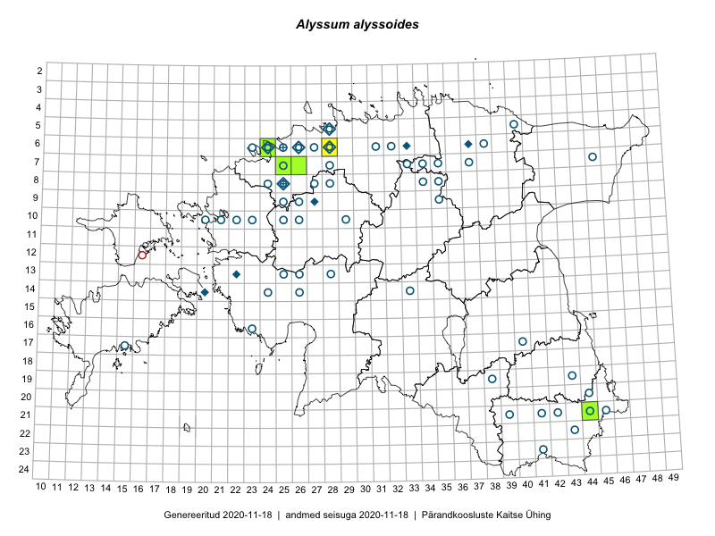

Alyssum alyssoides — tupp-kilbirohi
Brassicaceae :: Alyssum alyssoides (L.) L. (113); Alyssum calycinum L. (4)

Kaart põhineb 117 kirjel:
vaatlusi 13
herbaareksemplare 104
Taime kaasaegsed ja ajaloolised leiukohad asuvad 53 ruudus.
Tingmärgid ja ruutude arvud periooditi (U1 / V2 )
█ 2006–2020 (5/–)
◆/◇ 1971–2005 (9/5)
○ 1921–1970 (48/11)
+ kuni 1920 (2/0)
× hävinud (–/0)
? kaheldav (–/0)
| Ruut | Leidja(d) | Leiuaeg | Kirje |
|---|---|---|---|
| 11-16 | Haide-Ene Rebassoo | 1957–1984 | ruut/ala: Alyssum alyssoides (L.) L. |
| 08-34 | Maret Kask | 1957–1958 | ruut/ala: Alyssum alyssoides (L.) L. |
| 08-35 | J. Talts, S. Talts | 1935–1936 | ruut/ala: Alyssum alyssoides (L.) L. |
| 09-35 | 1935-06–1936-09 | ruut/ala: Alyssum alyssoides (L.) L. | |
| 06-26 | V. Kuusk, N. Ingerpuu | 1989-06-27 | ruut/ala: Alyssum alyssoides (L.) L. |
| 06-37 | H. Krall, N. Ingerpuu, V. Kuusk, M. Kask | 1985-07-17 | ruut/ala: Alyssum alyssoides (L.) L. |
| 06-28 | V. Kuusk | 1986-05-29 | ruut/ala: Alyssum alyssoides (L.) L. |
| 06-31 | M. Kask | 1958-08 | ruut/ala: Alyssum alyssoides (L.) L. |
| 09-26 | M. Kask | 1964-06-17–1964-06-21 | ruut/ala: Alyssum alyssoides (L.) L. |
| 14-24 | M. Kask | 1963–1964 | ruut/ala: Alyssum alyssoides (L.) L. |
| 19-38 | E. Pastak | 1936 | ruut/ala: Alyssum alyssoides (L.) L. |
| 06-28 | Tõnu Ploompuu | 2015-06-06 | ruut/ala: Alyssum alyssoides (L.) L. |
| 06-28 | Tõnu Ploompuu | 2015-06-06 | ruut/ala: Alyssum alyssoides (L.) L. |
| 06-24 | Olev Abner | 1995-07-03 | TALL C000671: Alyssum alyssoides (L.) L. |
| 05-28 | Tõnu Ploompuu | 1990-05-17 | TALL C000672: Alyssum alyssoides (L.) L. |
| 06-33 | Tõnu Ploompuu | 1991-06-21 | TALL C000673: Alyssum alyssoides (L.) L. |
| 08-28 | Vilma Kuusk | 1964-06-11 | TAA0026975: Alyssum alyssoides (L.) L. |
| 20-44 | Silvia Talts, Visolde Puusepp | 1957-06-17 | TAA0026977: Alyssum alyssoides (L.) L. |
| 20-44 | Maret Kask | 1965-07-10 | TAA0026978: Alyssum alyssoides (L.) L. |
| 06-38 | Visolde Puusepp | 1963-06-13 | TAA0026979: Alyssum alyssoides (L.) L. |
| 21-45 | Silvia Talts | 1957-06-22 | TAA0026980: Alyssum alyssoides (L.) L. |
| 06-32 | Leida Karu, Aino Sooman | 1958-07-01 | TAA0026986: Alyssum alyssoides (L.) L. |
| 21-42 | Silvia Talts | 1957-06-15 | TAA0026988: Alyssum alyssoides (L.) L. |
| 21-42 | Silvia Talts | 1957-06-15 | TAA0026989: Alyssum alyssoides (L.) L. |
| 21-42 | Silvia Talts | 1957-06-15 | TAA0026990: Alyssum alyssoides (L.) L. |
| 19-43 | Visolde Puusepp | 1957-06-22 | TAA0026991: Alyssum alyssoides (L.) L. |
| 09-26 | Silvia Talts | 1964-06-18 | TAA0026995: Alyssum alyssoides (L.) L. |
| 21-44 | Maret Kask | 1957-06-27 | TAA0026996: Alyssum alyssoides (L.) L. |
| 08-24 | Ants Lõhmus, Visolde Puusepp | 1960-08-04 | TAA0026998: Alyssum alyssoides (L.) L. |
| 10-21 | Alma Saare, Ella Tammemägi | 1960-07-08 | TAA0026999: Alyssum alyssoides (L.) L. |
| 10-22 | Helga Tamm, Tiiu Sütt | 1960-07-21 | TAA0027000: Alyssum alyssoides (L.) L. |
| 17-40 | Elsa Varep | 1949-06-02 | TAA0027001: Alyssum alyssoides (L.) L. |
| 07-28 | Visolde Puusepp | 1964-06-11 | TAA0027002: Alyssum alyssoides (L.) L. |
| 13-28 | Vilma Kuusk | 1964-07-06 | TAA0027003: Alyssum alyssoides (L.) L. |
| 13-28 | Agnes Ojaveer, Visolde Puusepp | 1964-07-02 | TAA0027004: Alyssum alyssoides (L.) L. |
| 06-24 | Lidia Matsin | 1960-08-09 | TAA0027005: Alyssum alyssoides (L.) L. |
| 20-44 | Maret Kask | 1965-07-10 | TAA0027007: Alyssum alyssoides (L.) L. |
| 06-24 | Karl Eichwald | 1960-07-14 | TAA0027008: Alyssum alyssoides (L.) L. |
| 21-42 | Maret Kask, U. Nõmm | 1964-06-05 | TAA0027009: Alyssum alyssoides (L.) L. |
| 08-25 | Alma Saare, Silvia Talts | 1964-06-12 | TAA0027010: Alyssum alyssoides (L.) L. |
| 20-44 | Maret Kask | 1970-07-29 | TAA0027012: Alyssum alyssoides (L.) L. |
| 06-28 | Visolde Puusepp | 1964-06-10 | TAA0027014: Alyssum alyssoides (L.) L. |
| 06-25 | Salme Lill, Helga Tamm | 1960-08-09 | TAA0027015: Alyssum alyssoides (L.) L. |
| 06-25 | Salme Lill, Helga Tamm | 1960-08-09 | TAA0027016: Alyssum alyssoides (L.) L. |
| 10-22 | Visolde Puusepp, Alma Saare | 1960-07-05 | TAA0027018: Alyssum alyssoides (L.) L. |
| 10-22 | Alma Saare, Malle Simson | 1960-07-07 | TAA0027019: Alyssum alyssoides (L.) L. |
| 14-26 | Agnes Ojaveer, Haide-Ene Rebassoo | 1960-07-16 | TAA0027020: Alyssum alyssoides (L.) L. |
| 07-45 | Maret Kask | 1961-08-07 | TAA0027023: Alyssum alyssoides (L.) L. |
| 23-41 | Maret Kask | 1957-08-01 | TAA0027026: Alyssum alyssoides (L.) L. |
| 06-23 | 1960-07-14 | TAA0027028: Alyssum alyssoides (L.) L. | |
| 09-25 | Maret Kask | 1960-08-05 | TAA0027029: Alyssum alyssoides (L.) L. |
| 14-33 | Agnes Ojaveer, Visolde Puusepp | 1965-06-23 | TAA0027030: Alyssum alyssoides (L.) L. |
| 10-23 | Kai Lang, Ella Tammemägi | 1960-07-05 | TAA0027031: Alyssum alyssoides (L.) L. |
| 10-26 | Gustav Vilbaste | 1933-06-26 | TAA0027032: Alyssum alyssoides (L.) L. |
| 10-26 | Gustav Vilbaste | 1933-06-26 | TAA0027033: Alyssum alyssoides (L.) L. |
| 10-26 | Gustav Vilbaste | 1933-06-26 | TAA0027034: Alyssum alyssoides (L.) L. |
| 07-25 | Heljo Karu | 1955-06-13 | TAA0027038: Alyssum alyssoides (L.) L. |
| 21-44 | 1940-05-29 | TAA0027041: Alyssum alyssoides (L.) L. | |
| 21-44 | 1940-05-29 | TAA0027042: Alyssum alyssoides (L.) L. | |
| 21-41 | Linda Viljasoo | 1957-06-15 | TAA0027047: Alyssum alyssoides (L.) L. |
| 17-40 | Johannes Talts | 1929-07-01 | TAA0027048: Alyssum alyssoides (L.) L. |
| 17-40 | Johannes Talts | 1929-07-01 | TAA0027049: Alyssum alyssoides (L.) L. |
| 21-42 | Silvia Talts | 1957-06-15 | TAA0027050: Alyssum alyssoides (L.) L. |
| 21-42 | Silvia Talts | 1957-06-15 | TAA0027051: Alyssum alyssoides (L.) L. |
| 07-37 | Linda Viljasoo | 1956-08-04 | TAA0027052: Alyssum alyssoides (L.) L. |
| 20-44 | Silvia Talts, Visolde Puusepp | 1957-06-17 | TAA0027053: Alyssum alyssoides (L.) L. |
| 08-34 | Maret Kask | 1958-08-06 | TAA0027055: Alyssum alyssoides (L.) L. |
| 07-34 | Juta Kaasik | 1958-08-13 | TAA0027058: Alyssum alyssoides (L.) L. |
| 07-34 | Juta Kaasik | 1958-08-13 | TAA0027059: Alyssum alyssoides (L.) L. |
| 10-29 | Vilma Kuusk | 1959-05-25 | TAA0027060: Alyssum alyssoides (L.) L. |
| 08-28 | Vilma Kuusk | 1959-05-27 | TAA0027061: Alyssum alyssoides (L.) L. |
| 06-26 | Vilma Kuusk | 1959-05-29 | TAA0027062: Alyssum alyssoides (L.) L. |
| 21-42 | Silvia Talts | 1957-06-15 | TAA0027063: Alyssum alyssoides (L.) L. |
| 21-42 | Silvia Talts | 1957-06-15 | TAA0027064: Alyssum alyssoides (L.) L. |
| 06-26 | Vilma Kuusk | 1959-05-31 | TAA0027066: Alyssum alyssoides (L.) L. |
| 08-27 | Gustav Vilbaste | 1934-07-31 | TAA0027067: Alyssum alyssoides (L.) L. |
| 08-27 | Gustav Vilbaste | 1934-07-31 | TAA0027073: Alyssum alyssoides (L.) L. |
| 10-25 | Gustav Vilbaste | 1933-06-29 | TAA0027080: Alyssum alyssoides (L.) L. |
| 05-40 | E. Kildemaa | 1925-07-02 | TAA0027082: Alyssum alyssoides (L.) L. |
| 10-20 | Gustav Vilbaste | 1934-06-26 | TAA0027084: Alyssum alyssoides (L.) L. |
| 21-39 | Maret Kask, Salme Kask | 1957-08-07 | TAA0026981: Alyssum alyssoides (L.) L. |
| 06-28 | Tõnu Ploompuu | 1991-06-10 | TALL C003706: Alyssum alyssoides (L.) L. |
| 13-22 | Heinrich Aasamaa | 1977-06-26 | TAM0055749: Alyssum alyssoides (L.) L. |
| 09-27 | Heinrich Aasamaa | 1998-09-19 | TAM0055754: Alyssum alyssoides (L.) L. |
| 06-38 | Gustav Vilbaste | 1927-06-21 | TAM0006198: Alyssum alyssoides (L.) L. |
| 08-25 | Erik Sits | 1930-06-11 | TAM0006199: Alyssum alyssoides (L.) L. |
| 06-28 | Th. Nenjukov | 1924 | TAM0006200: Alyssum alyssoides (L.) L. |
| 08-27 | Paul W. Thomson | 1922-06-26 | TAM0006202: Alyssum alyssoides (L.) L. |
| 08-27 | Paul W. Thomson | 1921-05-31 | TAM0006203: Alyssum alyssoides (L.) L. |
| 08-27 | Paul W. Thomson | 1921-05-31 | TAM0006204: Alyssum alyssoides (L.) L. |
| 06-27 | A. Saaristu | 1942-07-10 | TAM0006207: Alyssum alyssoides (L.) L. |
| 06-28 | Gustav Vilbaste | 1947-07-14 | TAM0006208: Alyssum alyssoides (L.) L. |
| 06-27 | Inno Salasoo | 1940-06-05 | TAM0006210: Alyssum alyssoides (L.) L. |
| 06-27 | A. Saaristu | 1942-07-10 | TAM0006211: Alyssum alyssoides (L.) L. |
| 06-25 | Hugo Salasoo | 1934-07-15 | TAM0006213: Alyssum alyssoides (L.) L. |
| 13-28 | A. Wiren | 1937-05-22 | TAM0006214: Alyssum alyssoides (L.) L. |
| 05-28 | Uve Ramst | 1999-07-05 | TAM0006327: Alyssum alyssoides (L.) L. |
| 08-25 | Õie Jaagomäe | 1982-07-05 | TAM0006328: Alyssum alyssoides (L.) L. |
| 08-25 | Õie Jaagomäe | 1982-07-05 | TAM0006329: Alyssum alyssoides (L.) L. |
| 08-25 | Õie Jaagomäe | 1982-07-05 | TAM0006330: Alyssum alyssoides (L.) L. |
| 08-25 | Õie Jaagomäe | 1982-07-05 | TAM0006331: Alyssum alyssoides (L.) L. |
| 06-24 | J.-M. Habicht | 2011-06-02 | TAM0030805: Alyssum alyssoides (L.) L. |
| 06-25 | Eugen Niclasen | 1900-06 | TAM0070333: Alyssum alyssoides (L.) L. |
| 06-24 | T. Lodjak | 1995-07-03 | TAM0074128: Alyssum alyssoides (L.) L. |
| 21-44 | Anneli Palo | 2007-06-12 | TAA0077696: Alyssum alyssoides (L.) L. |
| 08-25 | G. Pahnsch | 1874-07-19 | TAM0098691: Alyssum calycinum L. |
| 08-25 | G. Pahnsch | 1874-07-19 | TAM0098692: Alyssum calycinum L. |
| 06-26 | P. Kochtitsky | 1933-07-15 | TAA0115842: Alyssum calycinum L. |
| 05-28 | Jaak Ruubel | 1951-06-23 | TAM0129586: Alyssum calycinum L. |
| 07-25 | Erkki Otsman, Sergei Smirnov | 2015-07-17 | TAA0140323: Alyssum alyssoides (L.) L. |
| 07-26 | Jaak-Albert Metsoja | 2015-05-30 | TAA0140348: Alyssum alyssoides (L.) L. |
| 06-24 | Jaak-Albert Metsoja | 2015-07-31 | TAA0140610: Alyssum alyssoides (L.) L. |
| 17-15 | Fichtenberg | 1927 | TAA0117849: Alyssum alyssoides (L.) L. |
| 09-27 | Heinrich Aasamaa | 1998-09-19 | TAM0136277: Alyssum alyssoides (L.) L. |
| 13-22 | Heinrich Aasamaa | 1977-06-26 | TAM0136651: Alyssum alyssoides (L.) L. |
| 13-22 | Heinrich Aasamaa | 1977-06-26 | TAM0136652: Alyssum alyssoides (L.) L. |
| 21-44 | Toomas Kukk, Peedu Saar | 2018-05-17 | TAA0146621: Alyssum alyssoides (L.) L. |
Ruutude arv uue atlase andmekogu järgi. Muuhulgas arvestab vanemat herbaariumi, 2005. aasta atlase välitöölehtedelt uuesti digitaliseeritud andmeid jne. Uue atlase andmekogust pärinevad andmed on kaardile kantud siniste sümbolitega.↩︎
Ruutude arv 2005. aasta atlase (Kukk, T., Kull, T., Eesti taimede levikuatlas. Eesti Maaülikool, Põllumajandus- ja Keskkonnainstituut, Tartu, 2005) järgi. Andmeallikana on kasutatud levik.exe programmi, kus igas ruudus on registreeritud vaid uusim leid. Seetõttu on vanemate perioodide kohta andmed puudulikud. Kasutatud levik.exe andmestikus leidub mõningaid kõrvalekaldeid atlase trükis ilmunud versioonist, sagedamini tarnade ja käpaliste seas. Lisaks leidub selles andmestikus valik liike (peamiselt väheste leidudega tulnuktaimed), mille kaarte trükis ei avaldatud. Vana atlase andmed ruutudest, milles ei ole uue atlase andmekogus leide enne 2006. aastat, on kaardil esitatud punaste sümbolitega. Vana atlase andmetel hävinud ja kaheldavaid leiukohti pole hilisemate (taas)leidude põhjal korrigeeritud.↩︎